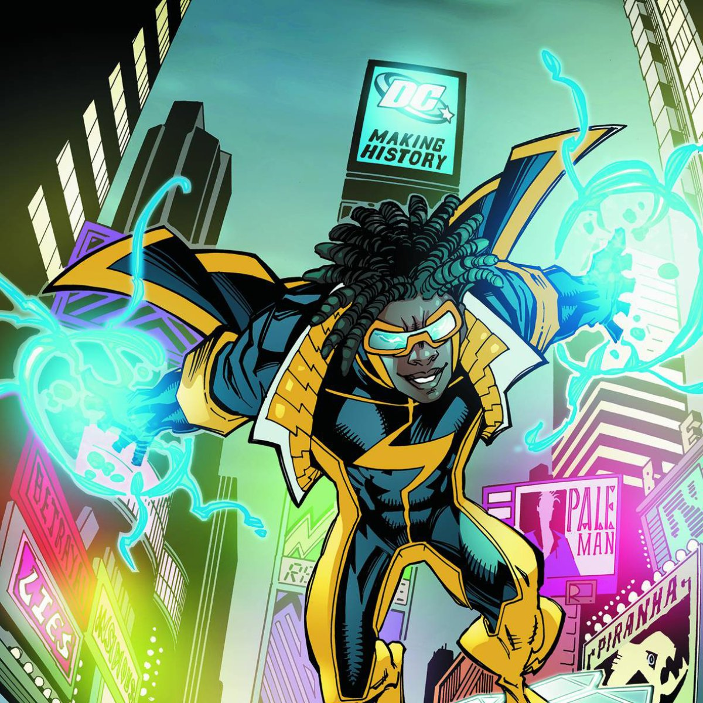

Virgil Hawkins era um garoto simples, gostava de jogar video-games e adorava ler HQ´s como a maioria dos garotos de sua idade ele também era muito tímido , mas por conta disso sofria constantemente ridicularizações de um garoto chamado Francis Stone. Um certo dia, após ter sido violentado pelo valentão, um amigo próximo de Virgil chamado Larry decide ajuda-lo a se vingar e o convida para Ilha Paris. Ao chegar no local o menino se depara com uma cena assustadora, ele vê Francis acorrentado enquanto Larry passava uma pistola para a mão de Virgil.
Assustado com a cena, ele joga a pistola em direção da água. Mas enquanto isso acontecia, no mesmo local acontecia uma guerra de gangues. Quando a polícia chega ao local, eles interviram de forma incisiva jogando gás de pimenta, mas esse gás acaba se misturando com alguns produtos químicos misteriosos que causou a morte de várias pessoas que estavam presente na ilha. Mas aquelas que sobreviveram, adquiriram mutações que desfiguraram suas caras, mas por alguma sorte Virgil não sofreu nenhuma e adquiriu poderes eletromagnéticos. Assim ao escolher usar esse dom para o combate ao crime, surge um dos heróis mais conhecidos de todos os tempos, o Super-Choque.
Se você acha que os poderes de Virgil se limitam a jogar cargas de energia em seus inimigos você está muito enganado, seus poderes são incríveis !!! Uma de suas habilidades é a absorção de energia e conseguir manipula-la, além de suas rajadas elétricas ele consegue criar um escudo quase impenetrável. Uma de suas características que poucos sabem é a capacidade de criar um bloqueamento magnético em volta de seu cérebro impedindo que seus inimigos consigam controlar sua mente e lerem ela.
Ele tem uma espécie de fator de cura também, podendo se recuperar de ferimentos absorvendo energia elétrica, há uma habilidade que pode ser considerada muito detetivesca que é a possibilidade de captar a frequência de rádios e interceptar chamadas telefônicas, sendo assim muito útil contra os bandidos. Virgil é considerado um gênio, muito por conta de ser um ótimo estrategista e ter um intelecto elevado.

Por mais que o herói tenha episódios inesquecíveis com a participação do Batman e da Liga da Justiça, Virgil veio de uma editora diferente como já dito, que acabou ganhando um universo a parte dentro da DC Comics, conhecido como
Dakotaverso.

No 12° e 13° episódio do desenho da Liga da Justiça: Sem Limites, Batman, Mulher- Maravilha e Lanterna Verde estavam atrás de um criminoso até serem teleportados para Gotham... só que no futuro !!!

Uma das melhores características da série é as participações especias que ocorriam de vez em quando, mas além de outros heróis aparecerem nos episódios quem também da as caras em alguns episódios são as celebridades como os jogadores de Shaquille O’Neal e Lil’ Romeo.